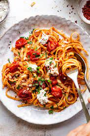

Tomato and Chilli Pasta

An easy midweek meal
This is a simple dish using few ingredients that you can make any night of the week.
This pasta is yummy and healthy and is very quick to make for all the family.
Ingredients
- 2 tbsp olive oil
- 1 tsp chilli flakes
- 1 red chilli
- 800g tinned tomatoes
- 500g pasta
2 garlic cloves
- Salt and pepper (for seasoning)
- Basil leaves
- Parmesan
Method
- Add olive oil to a large pan and heat. At the same time add water to your kettle to boil.
- Next, finely chop the red chilli, add this to the heated oil along side crushed garlic and chilli flakes, leaving some spare.
- Allow the garlic to cook for a few minutes, ensuring it doesn't burn. Add the tins tomatoes to the pan and break up with the back of the spoon. Leave to simmer and bubble away.
- Cook your pasta as per packet instructions in a separate pan. Once cooked drain, sparing some pasta water.
- Add your cooked pasta to the pan with your sauce and toss. If it requires loosening add some of the spared pasta water.
- Serve with parmesan and basil leaves. Season with salt and pepper as required.
See more recipes